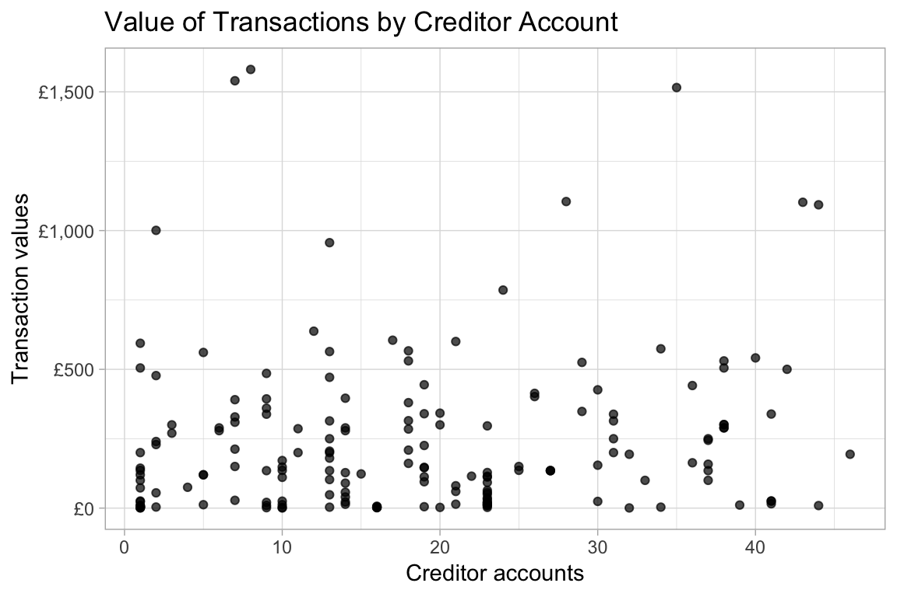
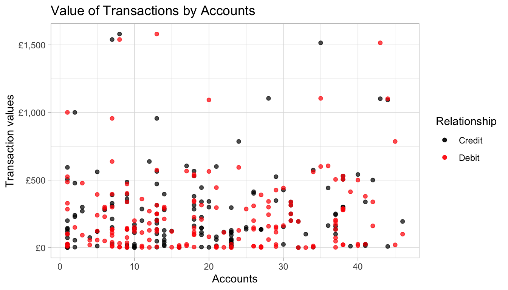
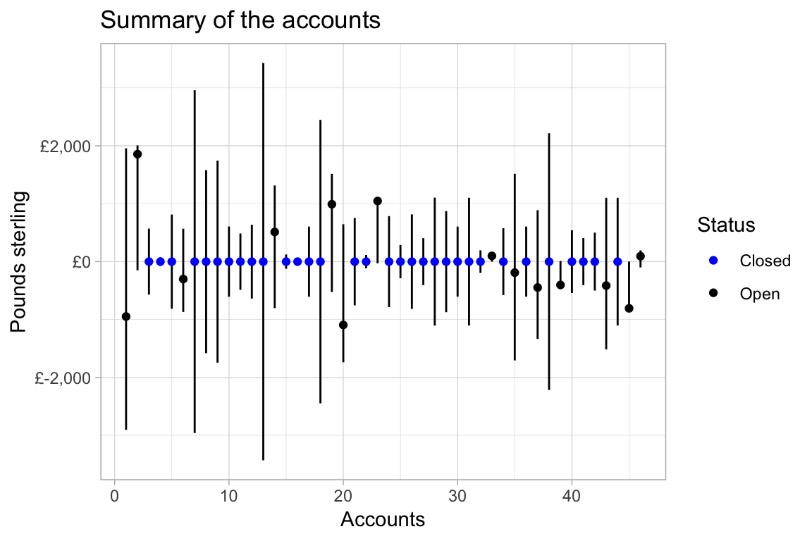
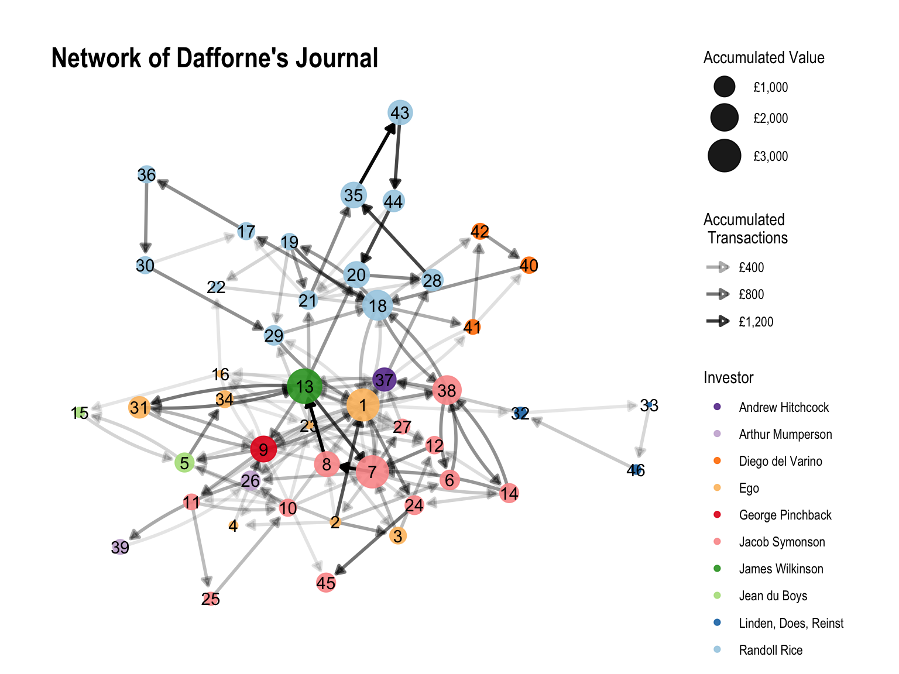

The tripartite monetary system of pounds, shillings, and pence used throughout medieval and early modern Europe creates practical problems for transcribing and analyzing large sets of monetary data. Account books contain various sorts of historically significant data, but the use of non-decimal monetary systems complicates analysis. How should the three separate monetary units be recorded in a data base, and how can they be brought together in ways that facilitate the analysis of account books? So long as these issues exist, the time consuming task of transcribing the transactions in account books into a data base hardly seems a valuable use of time, thereby precluding the use of digital tools to analyze or visualize the contents.
The debkeepr package seeks to facilitate digital analysis of account books through the implementation of the lsd class and functions designed to manipulate pounds, shillings, and pence values.1 At a very practical level, the goal of debkeepr is to make the transcription of historical account books into a data base a more valuable research activity. Once the contents of a set of account books are transcribed into a data base such as the example journal and ledger from Richard Dafforne’s The Merchant’s Mirrour, Or Directions for the Perfect Ordering and Keeping of His Accounts (London, 1660) used here, debkeepr assists the researcher in both the analysis and presentation of the data. By creating an environment to analyze the contents of account books in R, debkeepr also seeks to make the analysis of accounts more transparent and amendable to the practices of reproducible research.
This vignette uses the practice journal and ledger from the 1660 edition of Richard Dafforne’s Merchant’s Mirrour to give an example for some of the ways in which debkeepr can facilitate the examination and visualization of a set of account books. An introduction to Richard Dafforne and his manual on double-entry bookkeeping, along with analysis of individual transactions in the journal, can be found in the Transactions in Richard Dafforne’s Journal vignette. The practice journal and ledger in Merchant’s Mirrour provides a good starting point, because it is printed — and therefore more accessible — and is of reasonable length. A PDF copy of the journal is available for download, and the raw data shows how pounds, shillings, and pence units can be entered into three separate columns when creating the data base and then transformed into an lsd list column with deb_lsd_gather(). The result of this process is the dafforne_transactions and dafforne_accounts data that is included with debkeepr.
Dafforne’s example journal and ledger record the mercantile activities of a fictional merchant in London over a seven month period in 1634.2 Following the practices of double-entry bookkeeping, the journal documents each transaction and clearly lists one account as creditor and one as debtor. The accompanying ledger derives entirely from the journal and does not add any new information. Whereas the journal is organized by transaction, the ledger is organized by account. Each transaction is placed in the ledger twice, once under the credit account and once under the debit account. Dafforne’s journal contains 191 transactions between 47 accounts, and thus the ledger possesses 282 entries divided among the 47 accounts.
dafforne_transactions includes all of the transactions from the journal except those dealing with the balance account used to close the books. These transactions are excluded, because they can be recreated with the help of debkeepr, as is shown in more detail below.3 dafforne_transactions possesses 177 transactions or rows and 8 variables. Each transaction has a creditor and debtor account, the date of the transaction, and the value in pounds sterling contained in an lsd list column. Extra details include the pages on which the transaction can be found in Dafforne’s journal and ledger and a short description of the transaction. Addition information about the accounts that make up the books are contained in dafforne_accounts. The account id matches those used in the credit and debit variables in dafforne_transactions. This data frame also has a name for each account and a short description of the account. The “investor” column presents an extra organizing variable, listing the investor or the person’s whose capital is involved in the account.4
At a basic level, placing the contents of a set of account books into a data base can expedite the exploration of the transactions and relationships between the accounts. Even a modestly sized account book such as Dafforne’s journal has too many accounts and transactions to easily keep in one’s mind. To get a sense of the data, it helps to create a visual overview of the transactions and a summary of the accounts. This vignette uses dplyr to manipulate the data and to prepare it for plotting with ggplot2.
library(debkeepr)
library(dplyr)
library(tibble)
library(ggplot2)
# load the data
transactions <- dafforne_transactions
accounts <- dafforne_accountsA necessary side effect of the lsd list column used by debkeepr and found in dafforne_transactions is that it cannot be used for purposes of plotting or normal summary functions. However, these issues are overcome by the decimalization functions available in debkeepr. Pounds, shillings, and pence values can be decimalized and returned to their original form when desired. Thus, we can get an overview of the value of the transactions with the normal summary() function.
(transactions_dec <- transactions %>%
mutate(pounds = deb_lsd_l(lsd)) %>%
select(id, credit, debit, date, lsd, pounds))
#> # A tibble: 177 x 6
#> id credit debit date lsd pounds
#> <dbl> <int> <int> <date> <S3: lsd> <dbl>
#> 1 1 2 1 1633-01-01 1000, 15, 7 1001.
#> 2 2 2 3 1633-01-01 477, 10, 0 478.
#> 3 3 2 4 1633-01-01 55, 0, 6 55.0
#> 4 4 2 5 1633-01-01 240, 0, 0 240
#> 5 5 2 6 1633-01-01 229, 0, 0 229
#> 6 6 2 8 1633-01-01 3, 17, 8 3.88
#> 7 7 7 2 1633-01-01 150, 0, 0 150
#> 8 8 9 11 1633-01-04 360, 0, 0 360
#> 9 9 1 9 1633-01-04 144, 0, 0 144
#> 10 10 5 10 1633-01-04 120, 0, 0 120
#> # ... with 167 more rows
summary(transactions_dec$pounds)
#> Min. 1st Qu. Median Mean 3rd Qu. Max.
#> 0.5042 25.5292 145.9042 237.1677 315.0000 1580.5000To get a visual overview of the transactions, the value of each transaction can be plotted. Because each transaction is associated with two accounts — a debtor account and a creditor account — the journal could be visualized from the perspective of either the debtor or creditor accounts.
ggplot(data = transactions_dec) +
geom_point(aes(x = credit, y = pounds), alpha = 0.7) +
scale_y_continuous(labels = scales::dollar_format(prefix = "£")) +
labs(x = "Creditor accounts",
y = "Transaction values",
title = "Value of Transactions by Creditor Account") +
theme_light()
Alternatively, both the credit and debit account can be shown, essentially reproducing a double-entry-bookkeeping ledger, as each transaction is shown twice.
ggplot(data = transactions_dec) +
geom_point(aes(x = credit, y = pounds, color = "Credit"), alpha = 0.7) +
geom_point(aes(x = debit, y = pounds, color = "Debit"), alpha = 0.7) +
scale_color_manual(values = c(Credit = "black", Debit = "red")) +
scale_y_continuous(labels = scales::dollar_format(prefix = "£")) +
labs(x = "Accounts",
y = "Transaction values",
color = "Relationship",
title = "Value of Transactions by Accounts") +
theme_light()
The exact values of the transactions are not necessarily easy to follow in these plots with 177 and 354 points respectively, but they give a good sense of the basic distribution of transactions. Only a handful of transactions involved values over £1,000 sterling, and the majority of transactions were for less that £200. The smaller number of transactions over £1,000 make it possible to match up the credit and debit accounts in the plot with both sets of accounts.
The above plots provide a view of the raw data from Dafforne’s journal, but they do little to show an overview of the accounts. What was the total credit or value sent by each account, what was the total debit or value received by each account, and how much value, if any, remained on the account at the closing of the book? These questions can be answered separately with deb_credit(), deb_debit(), and deb_current(), or together with deb_account_summary().
# Summary of accounts
deb_account_summary(transactions)
#> # A tibble: 46 x 4
#> account_id credit debit current
#> <int> <S3: lsd> <S3: lsd> <S3: lsd>
#> 1 1 1956, 10, 11 2903, 13, 0 -947, -2, -1
#> 2 2 2006, 3, 9 150, 0, 0 1856, 3, 9
#> 3 3 570, 0, 0 570, 0, 0 0, 0, 0
#> 4 4 75, 0, 8 75, 0, 8 0, 0, 0
#> 5 5 813, 3, 0 813, 3, 0 0, 0, 0
#> 6 6 568, 1, 11 869, 2, 7 -301, 0, -8
#> 7 7 2958, 18, 10 2958, 18, 10 0, 0, 0
#> 8 8 1580, 10, 0 1580, 10, 0 0, 0, 0
#> 9 9 1744, 1, 4 1744, 1, 4 0, 0, 0
#> 10 10 606, 2, 6 606, 2, 6 0, 0, 0
#> # ... with 36 more rowsFrom this information, a line range plot can be constructed with the upper limit represented by the total credit, the lower limit by the total debit, and the current value by a point. Though conceptually it is not always helpful to think of debits as negative values — debits represent the values received by an account — it makes sense in this instance to distinguish credit values from debit values by making debits negative.
# Plot summary of accounts
deb_account_summary(transactions) %>%
mutate_if(deb_is_lsd, deb_lsd_l) %>%
mutate(debit = -debit) %>%
ggplot() +
geom_linerange(aes(x = account_id, ymin = debit, ymax = credit)) +
geom_point(aes(x = account_id, y = current,
color = if_else(current == 0, "Closed", "Open"))) +
scale_color_manual(values = c(Open = "black", Closed = "blue")) +
scale_y_continuous(labels = scales::dollar_format(prefix = "£")) +
labs(x = "Accounts",
y = "Pounds sterling",
color = "Status",
title = "Summary of the accounts") +
theme_light()
This summary plot shows the accounts through which the largest amounts of capital passed and highlights the accounts that remain open at the end of the books compared to those that have been closed by having their balance zeroed out.5 The plot provides a good basis to identify and further investigate the most valuable accounts. For instance, we can find the accounts that had a total credit exceeding £1,900 with the help of deb_credit().
deb_credit(transactions) %>%
filter(deb_lsd_l(lsd) > 1900) %>%
left_join(select(accounts, id, account), by = c("account_id" = "id")) %>%
arrange(desc(deb_lsd_d(lsd))) %>%
knitr::kable(caption = "Accounts with the highest total credit")| account_id | lsd | account |
|---|---|---|
| 13 | c(3430, 7, 9) | James Wilkinson |
| 7 | c(2958, 18, 10) | Jacob Symonson - account current |
| 18 | c(2447, 3, 5) | Randoll Rice - account current |
| 38 | c(2215, 13, 9) | Amsterdam exchange - company with Jacob Symonson |
| 2 | c(2006, 3, 9) | Stock |
| 1 | c(1956, 10, 11) | Cash |
The above plots treat either the transactions or accounts as discrete entities. However, an account book is naturally relational. The structure of dafforne_transactions and dafforne_accounts purposely mimics that used to create network graphs. dafforne_transactions has the form of a directed edge list: each transaction is a link between accounts with the values going from the credit account to the debit account. dafforne_accounts is a node list, or a data frame in which each account id found in either the credit or debit column of dafforne_transactions is listed along with additional information about the accounts. There are a variety of ways to create and plot network graphs in R, but this vignette will use igraph to create the graph object and ggraph to plot the graph.
A network graph can show various types of information beyond the linking of the accounts by associating the edges or links and the nodes or accounts with variables from the data. The links between the accounts can be related to the total value of the transactions in each direction, and the nodes can be associated with either the total value they received (debit) or sent (credit). Extra information can be added to the nodes by joining the total values for each account with information from the dafforne_accounts data. In this case, the “investor” variable is attached to the debit values for each account.
library(igraph)
library(ggraph)
# Nodes: Total debit for each account
debits <- deb_debit(transactions) %>%
mutate(pounds = deb_lsd_l(lsd)) %>%
left_join(select(accounts, id, investor), by = c("account_id" = "id"))
# Edges: Sum of transactions by link
transactions_sum <- transactions %>%
group_by(credit, debit) %>%
deb_summarise(lsd) %>%
mutate(librae = deb_lsd_l(lsd)) %>%
arrange(librae)
# Create igraph object
ledger_graph <- graph_from_data_frame(d = transactions_sum,
vertices = debits,
directed = TRUE)The creation of an igraph object opens a whole set of tools for analyzing the account books, but here the network analysis is primarily restricted to its visualization. The following graph shows the total value of the transactions between each set of accounts using the transparency of the link, and arrows are present on the edges to show the direction of the transaction from the creditor account to the debtor account. The size of the node is used to represent the total accumulated value for each account. The nodes are labelled with their account id and colored by the “investor” variable.
# Ledger graph
set.seed(240)
ggraph(ledger_graph, layout = "kk") +
geom_edge_fan(aes(edge_alpha = librae),
width = 1,
arrow = arrow(length = unit(2, 'mm')),
end_cap = circle(3, 'mm')) +
scale_edge_alpha(labels = scales::dollar_format(prefix = "£")) +
geom_node_point(aes(size = pounds, color = investor), alpha = 0.9) +
scale_color_brewer(palette = "Paired", direction = -1) +
geom_node_text(aes(label = name)) +
scale_size_continuous(range = c(1, 10), labels = scales::dollar_format(prefix = "£")) +
labs(color = "Investor",
size = "Accumulated Value",
edge_alpha = "Accumulated \n Transactions",
title = "Network of Dafforne's Journal") +
theme_graph()
The graph helps to identify the accounts that had the largest amount of capital pass through them and the level of transparency of the edges shows the movement of capital. The transparency of the edges makes clear the significant movement of capital among communities of accounts such as the triad of accounts 7, 8, and 13 deriving from the sale of cochineal for Jacob Symonson to James Wilkinson.6 The Kamada-Kawai layout algorithm places the nodes with the highest centrality, or the most connections, towards the center, and those that have fewer connections are placed on the outside. Therefore, it is unsurprising to see the central position of accounts such as account 1, or the cash account, since any payment or reception of cash went through this account. This arrangement of the nodes can be confirmed by showing the accounts that have the most connections or links to other accounts.
# 10 accounts with the most connections
sort(degree(ledger_graph), decreasing = TRUE)[1:10]| 1 | 23 | 9 | 13 | 7 | 18 | 37 | 38 | 10 | 16 |
|---|---|---|---|---|---|---|---|---|---|
| 24 | 18 | 15 | 15 | 14 | 12 | 11 | 9 | 8 | 8 |
The use of the “investor” variable for the color of the nodes is one of a variety of ways in which the accounts could be grouped, but this graph helps to demonstrate the meaningfulness of the grouping, as well as highlighting something about Dafforne’s bookkeeping practices. This can be seen through a comparison of the involvement of four different merchants in the account book: Jacob Symonson, Randoll Rice, George Pinchback, and Diego del Varino. Both Jacob Symonson and Randoll Rice invested in a number of companies with the bookkeeper, but the accounts that involved the capital of Symonson (pink) interacted with more of the bookkeeper’s accounts (light orange) and a greater variety of accounts that involved other merchants than did those of Randoll Rice. Whereas the Kamada-Kawai algorithm places Symonson’s account close to the bookkeeper’s most significant accounts, Rice’s many accounts (light blue) mostly interacted with each other and so are shown towards the top of the graph, away from the center.
Compare the placement of the accounts of Rice to the single account for the merchant George Pinchback (red). Pinchback was involved in both the purchase and sale of goods, and this one account has 15 links to and from other accounts, making it quite central to the network.7 On the other end of the spectrum are the three accounts containing Diego del Varino’s capital (orange). Del Varino served as a factor in Lisbon for ventures made by the company that the bookkeeper had with Randoll Rice (accounts 30 and 36), but the orange accounts (40, 41, and 42) represent the bookkeeper’s work as Del Varino’s factor. These accounts have transactions between each other but with relatively few other accounts, leading to their placement on the edge of the graph. The comparison of the visual representation of the accounts of these four merchants is further demonstrated by creating a table relating the total links and accounts per the investor grouping.
# Total links per investor
total_links <- tibble(id = as.numeric(names(degree(ledger_graph))),
links = degree(ledger_graph)) %>%
left_join(select(accounts, id, investor), by = "id") %>%
group_by(investor) %>%
summarise(links = sum(links)) %>%
arrange(desc(links))
# Accounts per investor
accounts_investor <- accounts %>%
group_by(investor) %>%
summarise(accounts = n())
left_join(total_links, accounts_investor, by = "investor") %>%
knitr::kable(caption = "Links and accounts per investor")| investor | links | accounts |
|---|---|---|
| Ego | 72 | 8 |
| Jacob Symonson | 71 | 12 |
| Randoll Rice | 60 | 13 |
| George Pinchback | 15 | 1 |
| James Wilkinson | 15 | 1 |
| Andrew Hitchcock | 11 | 1 |
| Diego del Varino | 11 | 3 |
| Jean du Boys | 10 | 2 |
| Arthur Mumperson | 9 | 2 |
| Linden, Does, Reinst | 8 | 3 |
Moving beyond the comparison of accounts bearing the capital of merchants, the visual structure of the graph and the grouping by investor demonstrates a more general bookkeeping practice recommended by Dafforne, namely the division of types of capital or ventures into separate accounts. This practice is seen most clearly in the multiple accounts involving Jacob Symonson and Randoll Rice, but the simplest example may be the three accounts of Diego del Varino. Instead of keeping the work the bookkeeper performed as Del Varino’s factor within a single account, the bookkeeper spreads the capital among three separate accounts. Accounts 40, 41, and 42 record the sale of fruit for Del Varino to Randoll Rice and Rice’s partial payment in cash resulting in the creation of an account of ready money for Del Varino (account 41) and a separate current account for the remainder of the sale (account 42).
The practice of creating multiple accounts facilitated the calculation of profits or losses associated with individual ventures, but it also means that the total transactional value of an account book is a less meaningful measurement of capital investment than it might first appear. To properly keep track of various types of capital, Dafforne often transferred capital from one account to another, leading the same or similar values to be recorded multiple times. Thus, the total debit and sum of the transactions relating to the sale of fruit for Del Varino in his three accounts of £1446 18s. was much greater than the proceeds of the sale of £541 4s. 9d.
(varino_debits <- filter(debits, account_id >= 40 & account_id <= 42))
#> # A tibble: 3 x 4
#> account_id lsd pounds investor
#> <int> <S3: lsd> <dbl> <chr>
#> 1 40 541, 4, 9 541. Diego del Varino
#> 2 41 405, 10, 7 406. Diego del Varino
#> 3 42 500, 2, 8 500. Diego del Varino
# Total debit
deb_sum(varino_debits$lsd)
#> l s d
#> [1] 1446 18 0The summary of accounts in Dafforne’s practice journal and ledger and the visualization of their relationships provide a good basis for further analysis into the workings of individual accounts. The accounts chosen for further inquiry and the nature of the analysis will differ according to the account book and the research questions being asked. This example concentrates on the development of the bookkeeper’s capital during the period covered by the journal and ledger by investigating the opening of the books through the stock account (account 2), the calculation of profits and losses during this period (account 23), and the state of the books at the time of their closing.
According to Dafforne, at the opening of a new set of account books the merchant must create an inventory in which all cash, unsold wares, debtors, and creditors are listed in relation to the stock account. Of this account Dafforne explains that it “containeth in it, all what a man possesseth; whether Money, Wares, Debts due to us, or the like: and (marke this well) Cash, yea, each particular thing that I possesse, is but a member of that whole body stocke; therefore by the joynt meeting of all those members, the body (Stock) is made compleat.”8 We can get a better understanding of the inventory or opening of the books by inspecting the stock account. One way to do this is to recreate the ledger entries for the account. The dafforne_transactions data is presented in the form of the journal: each transaction is listed once and tied to two accounts. The ledger can be replicated by finding all debit transactions for an account — the left side of the page in the ledger — and all credit transactions for the account — the right side of the ledger.
# Stock is debtor
filter(transactions, debit == 2)
#> # A tibble: 1 x 8
#> id credit debit date lsd journal ledger description
#> <dbl> <int> <int> <date> <S3: > <int> <chr> <chr>
#> 1 7 7 2 1633-01-01 150, … 1 1/2 Ready money from Ja…
# Stock is creditor
filter(transactions, credit == 2)
#> # A tibble: 6 x 8
#> id credit debit date lsd journal ledger description
#> <dbl> <int> <int> <date> <S3: > <int> <chr> <chr>
#> 1 1 2 1 1633-01-01 1000,… 1 1/1 Various coins of go…
#> 2 2 2 3 1633-01-01 477, … 1 1/1 60 Leeds dozens at …
#> 3 3 2 4 1633-01-01 55, 0… 1 2/1 5 barrels that rema…
#> 4 4 2 5 1633-01-01 240, … 1 2/1 For 800 French crow…
#> 5 5 2 6 1633-01-01 229, … 1 2/1 2290 guilders remai…
#> 6 6 2 8 1633-01-01 3, 17… 1 3/1 Expenses for the re…The ledger also includes the sum of the debits and credits, which can be presented using the deb_account() function.
# Summary of stock account
deb_account(transactions, account_id = 2)
#> # A tibble: 3 x 2
#> relation lsd
#> <chr> <S3: lsd>
#> 1 credit 2006, 3, 9
#> 2 debit 150, 0, 0
#> 3 current 1856, 3, 9The inventory consisted of seven items: six credits or items that served to increase the bookkeeper’s stock and one debit of money he owed to another. When taken together, the inventory demonstrated that the bookkeeper’s credits exceeded his liabilities by £1,856 3s. 9d., which represents the sum of the bookkeeper’s estate on 1 January 1633 English style. This means that over 92% of the capital in the inventory belonged to the bookkeeper.
# Percentage of bookkeeper's stock to total capital
deb_lsd_l(c(1856, 3, 9)) / deb_lsd_l(c(2006, 3, 9))
#> [1] 0.9252313The most significant account for the development of the bookkeeper’s capital or stock over the course of the journal and ledger is that of profit and loss (account 23). Completed ventures or accounts are balanced by bringing the difference between the total credit and debit to the profit and loss account. Ventures that result in more credit than debit — for instance if the sale of goods (credit) was more than the purchase of the goods plus any expenses (debit) — create a profit. In such as case profit and loss is made creditor to the account for the difference. The opposite occurs with losses. Thus, a merchant hopes to have more credit than debit in the account of profit and loss, which is what occurred in Dafforne’s practice books.
# Summary of profit and loss
deb_account(transactions, account_id = 23)
#> # A tibble: 3 x 2
#> relation lsd
#> <chr> <S3: lsd>
#> 1 credit 1075, 8, 11
#> 2 debit 29, 0, 1
#> 3 current 1046, 8, 10The account books only showed three small losses or debits during the course of the books, so it is more interesting to concentrate on the much more substantial profits. A useful measurement is to see not only raw value that each account created in profits but also the relation of that value to the total profits, shown here as a percentage.
# Percentage of profits by account
filter(transactions, credit == 23) %>%
group_by(debit) %>%
deb_summarise(lsd) %>%
mutate(pct = deb_lsd_l(lsd) / deb_lsd_l(c(1046, 8, 10)) * 100) %>%
left_join(accounts, by = c("debit" = "id")) %>%
select(id = debit, account, lsd, pct) %>%
arrange(desc(pct)) %>%
knitr::kable(digits = 2, caption = "Percentage of profits by account")| id | account | lsd | pct |
|---|---|---|---|
| 21 | Profit and loss - company with Randoll Rice | c(298, 18, 4) | 28.57 |
| 12 | Kerseys in company with Jacob Symonson | c(128, 5, 0) | 12.26 |
| 29 | Figs - company with Randoll Rice | c(114, 15, 5) | 10.97 |
| 11 | Voyage to Amsterdam - Jacob Symonson | c(111, 17, 0) | 10.69 |
| 3 | Wares | c(92, 10, 0) | 8.84 |
| 24 | Voyage to Lisbon - company with Jacob Symonson | c(63, 17, 9) | 6.11 |
| 5 | Jean du Boys - account current | c(56, 5, 6) | 5.38 |
| 6 | Jacob Symonson - account by him in company | c(50, 0, 0) | 4.78 |
| 9 | George Pinchback | c(36, 5, 0) | 3.46 |
| 8 | Jacob Symonson - Cochineal | c(31, 12, 2) | 3.02 |
| 38 | Amsterdam exchange - company with Jacob Symonson | c(22, 0, 8) | 2.11 |
| 4 | Kettles | c(20, 0, 2) | 1.91 |
| 16 | Interest reckoning | c(16, 6, 2) | 1.56 |
| 1 | Cash | c(13, 4, 0) | 1.26 |
| 26 | Danzig exchange - company with Arthur Mumperson | c(10, 19, 9) | 1.05 |
| 27 | Jacob Symonson - Cambric cloth | c(8, 12, 0) | 0.82 |
The process of closing a set of books as described by Dafforne involved identifying open accounts, those that still had a positive or negative balance, and transferring the remaining balance to an account Dafforne called Balance.9 This account and the transactions that serve to balance the accounts in the books are absent from dafforne_transactions and dafforne_accounts, but they can be recreated here. The first step is to identify all accounts that remained open on July 20th, 1634 when Dafforne closed the books.
# Open accounts: Arranged from credits to debits
balance <- deb_open(transactions) %>%
left_join(select(accounts, id, account), by = c("account_id" = "id")) %>%
arrange(desc(deb_lsd_l(lsd)))
knitr::kable(balance, caption = "Open accounts")| account_id | lsd | account |
|---|---|---|
| 2 | c(1856, 3, 9) | Stock |
| 23 | c(1046, 8, 10) | Profit and loss |
| 19 | c(991, 7, 6) | Randoll Rice - account by me in company |
| 14 | c(512, 3, 8) | Jacob Symonson - account by me in company |
| 33 | c(99, 7, 7) | Hendrick vander Linden, John van Does, Jaques Reinst - ready money |
| 46 | c(93, 19, 8) | Hendrick vander Linden, John van Does, Jaques Reinst - account of time |
| 35 | c(-189, -12, 0) | Voyage to Antwerp - company with Randoll Rice |
| 6 | c(-301, 0, -8) | Jacob Symonson - account by him in company |
| 39 | c(-402, -12, -1) | Arthur Mumperson |
| 43 | c(-413, -6, -8) | Thomas Trust - company with Randoll Rice - account of time |
| 37 | c(-446, -12, -9) | Andrew Hitchcock |
| 45 | c(-806, -6, -11) | Figs - company with Jacob Symonson |
| 1 | c(-947, -2, -1) | Cash |
| 20 | c(-1092, -17, -10) | Jean du Boys - company with Randoll Rice |
This operation essentially recreates the the Balance account as used by Dafforne, though one alteration must be made before they are truly equivalent. According to Dafforne, the penultimate step in creating a balance is to close the account for profits and losses by “carrying the difference to your Stock account.”10 Adding the value remaining in the profit and loss account (account 23) to the stock account (account 2) calculates the total capital held by the bookkeeper, while also balancing the profit and loss account so that it can again calculate the profits and losses experienced during the duration of the next set of books. Thus, a true balance as described by Dafforne would show that the stock account concluded with a total credit of £2,902 12s. 7d.
# Stock at the close of the books
balance %>%
filter(account_id == 2 | account_id == 23) %>%
deb_summarise(lsd)
#> # A tibble: 1 x 1
#> lsd
#> <S3: lsd>
#> 1 2902, 12, 7This information enabled merchants to understand the development of their capital. In this instance, the bookkeeper’s capital grew by over 56% in less than eight months, as his capital or stock, the amount that the credits on his book surpassed the debits, increased from £1,856 3s. 9d. to £2,902 12s. 7d.
# Create an lsd object for easier calculation
(balance_lsd <- balance$lsd)
#> l s d
#> [1] 1856 3 9
#> [2] 1046 8 10
#> [3] 991 7 6
#> [4] 512 3 8
#> [5] 99 7 7
#> [6] 93 19 8
#> [7] -189 -12 0
#> [8] -301 0 -8
#> [9] -402 -12 -1
#> [10] -413 -6 -8
#> [11] -446 -12 -9
#> [12] -806 -6 -11
#> [13] -947 -2 -1
#> [14] -1092 -17 -10
# Percentage of growth: profits over opening capital
deb_lsd_l(balance_lsd[2]) / deb_lsd_l(balance_lsd[1])
#> [1] 0.5637586Not only did the bookkeeper’s own capital grow rapidly, but the capital contained in the account books increased even more quickly. Whereas there had only been a total of £2,006 3s. 9d. at the time of the inventory, by the closing of the books the assets and liabilities remained on the books had more than doubled to £4,599 11s., a growth of 129%. This of course meant that bookkeeper’s stock, or the amount that his assets exceeded his liabilities, now constituted a much smaller percentage of the capital as a whole, having decreased from the original 92% to a much more reasonable 63%. This ratio of the bookkeeper’s estate to total capital in his account books indicates a more mature and diversified trading portfolio than is present at the time of the inventory.
# Total balance remaining on the books
deb_balance(transactions)
#> # A tibble: 2 x 2
#> relation lsd
#> <chr> <S3: lsd>
#> 1 credit 4599, 11, 0
#> 2 debit 4599, 11, 0
# Growth in the capital on the books
deb_lsd_l(deb_subtract(c(4599, 11, 0), c(2006, 3, 9))) / deb_lsd_l(c(2006, 3, 9))
#> [1] 1.292682
# Percentage of bookkeeper's stock to total capital
deb_lsd_l(deb_sum(balance_lsd[1:2])) / deb_lsd_l(c(4599, 11, 0))
#> [1] 0.6310681The analysis of Dafforne’s practice journal and ledger presented here provides a glimpse into the types of investigations, calculations, and visualizations made possible through the use of debkeepr combined with the programming environment of R. Most of the calculations and even the visuals presented in this vignette could be made without debkeepr. Of course, in the seventeenth century merchants had to make all of their accounting calculations by hand. Yet, this was and is a cumbersome activity. It is not a particularly mathematically difficult task to add together the credits or debits of the accounts remaining open at the closing of the book, but it is certainly easier to use deb_balance(transactions). The task is more difficult when the question is the total transactional value that passed through the account book. Here, deb_summarise(transactions, lsd) is much preferable. Moreover, while it is possible to reproduce the graphs showing the values of the transactions or the summary of the accounts, this would involve long periods of data entry that might not be of much use beyond the single implementation.
At the same time, debkeepr introduces tools of analysis that are not possible without the ability to manipulate pounds, shillings, and pence within a data base. The network graph of the transactions in Dafforne’s journal would be difficult to recreate without debkeepr, especially if you wanted to maintain total accuracy and be able to see the values in pounds, shillings, and pence form. The transformation of data from an account book into a network graph object opens up all kinds of new forms of analysis. This vignette has only scratched the surface of the possibilities.
The most valuable tool that debkeepr brings to the analysis of historical economic data that takes the form of pounds, shillings, and pence values is the possibility of quickly iterating over problems and providing solutions that are reproducible. debkeepr provides a workflow for entering data from account books into a data base, tidying the data by transforming separate pounds, shillings, and pence variables into an lsd list column, and then exploring, analyzing, and visualizing the data in ways that integrate with the tidyverse and more general practices of data analysis in R. Take for instance the last set of calculations concerning the balance at the closing of the books and its relation to the bookkeeper’s stock. The calculations could be done by hand, but the steps become more transparent when done through code. Another example of this is the calculation of percentage of profits by account for the profit and loss account. Each step in the analysis can be followed and individually critiqued to ensure that the calculations are properly made. In addition, the process is easily replicable for all other accounts in the account book. In other words, debkeepr provides a powerful and transparent set of tools for the investigation into and analysis of the social interactions found in historical account books.
For an introduction to the use of debkeepr, see the Getting Started with debkeepr vignette.↩
The dates in the journal follow the Anglican calendar, which used the Julian calendar and used the 25th of March as the New Year.↩
The accounts often involve multiple people. Thus, account 17 represents the values associated with 100 says consigned to Diego del Varino in Lisbon for a company between the bookkeeper and Randoll Rice. The “investor” variable provides a means to organize the accounts by those with whom the bookkeeper invested, and so in the case of account 17 Randoll Rice is listed as the “investor” and not Diego del Varino, who was acting as a factor.↩
It is for this reason that the balance account is not included in the dafforne_transactions data. If it was included, all of the accounts would be balanced.↩
Transactions 28 and 32 in the journal.↩
The accounts for the merchants James Wilkinson (green) and Andrew Hitchcock (purple) are structurally similar to that of Pinchback.↩
Dafforne, Merchant’s Mirrour, 9.↩
Dafforne, Merchant’s Mirrour, 47–50.↩
Dafforne, Merchant’s Mirrour, 50.↩